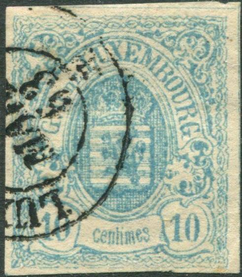
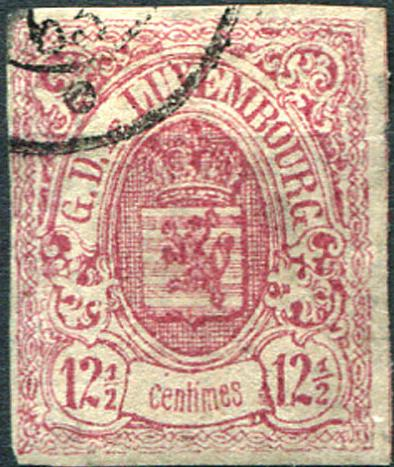
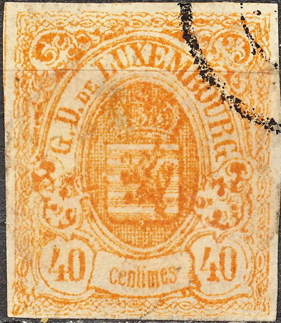
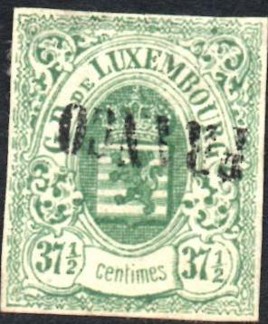

Return To Catalogue - Luxembourg 1859-1881, forgeries, part 2 - Luxembourg 1859-1881, forgeries; Fournier and Sperati - Luxembourg 1859-1881
Note: on my website many of the
pictures can not be seen! They are of course present in the
catalogue;
contact me if you want to purchase it.
First forgery:
  


First forgery; "G" of "LUXEMBOURG" has a
tail.


There appear to be two types of the 37 1/2 c, compare the right
"37 1/2" in the above two forgeries.
In the forgeries shown above, the letters "RG" of "LUXEMBOURG" are touching the frame, the "G" of this word has a peculiar tail. This forgery seems to exist for all(?) values. The 10 c forgery is obtained from the website: http://www.luxcentral.com/stamps/LuxFakes.html. Note that these forgeries often have guidelines around the stamp. The crown on the head of the lion touches the upper line of the shield (in the genuine stamps it doesn't).
From the above mentioned website this 'Hamburg forgery' was also obtained (it was probably made in Hamburg):



Hamburg forgeries. The letter "D" of "G.D"
for example is almost touching the frameline left to it. These
forgeries have guidelines around the stamps. In my opinion, the
dot behind the "D" of "G.D." is too close to
the word "DE". The upper line has many 'pointy parts'
which are much less prominent in the genuine stamps. Note that
the "L" of "LUXEMBOURG" is placed a bit too
high and is slanting backwards.

25 c: The same forgery type as above, but with the
"25"s different.


Lower values, probably also Hamburg forgeries; note the same
"LUXEMBOURG 12 MARS 63", "PD" and four-ring
cancels. In my opinion, the "G" of "G.D." is
too tall and the "g" of "Luxembourg" touches
the line below it and the "L" of this word is too
large. These forgeries also have guidelines around the stamps.
Luxembourg 1859-1881, forgeries, part 2
Click here for Luxembourg 1859-1881 forgeries made by Fournier and Sperati
Stamps - Timbres-Poste - Briefmarken
{kind=link}
{kind=link}
{kind=link}
{kind=link}